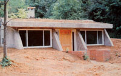
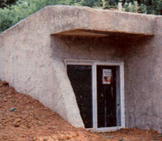
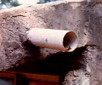
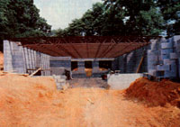

A Down-To-Earth Architect
January/February 1981
One of Angus Macdonald's fondest dreams is to share enough knowledge with his neighbors to enable them to design and build their own energy-efficient homes.
Through an unfortunate set of circumstances, many people have come to assume that architects (and architecture) have little to do with the construction of dwellings within reach of the budgets of average families. Instead, we often assume that such artists design spectacular and expensive (but not necessarily useful ) structures such as the St. Louis Arch . . . or-far less happily-chrome buildings with exploding windows, and column-supported skyscrapers promising to tip over in an earthquake . . . and to produce wind-tunnel-effect tornadoes at street level until they do!
That's a shame really! Because, as MOTHER was recently reminded, architects-the ones with what we might call "right minds"can be indispensable in helping others learn to live more comfortably for less . . . in the sort of energyefficient structures most readers of this magazine would prefer.
Angus Wyman Macdonald is a Yale University Master Architect who chose his path early in his schooling (he can't even recall when he decided to become an architect! ). The central emphasis of his studies was on low-cost, energy-efficient construction . . . and his master's thesis involved designing a low-income housing project in Harlem.
After graduation, Angus spent a few months with a large architectural firm, and then-somewhat disaffected-chose to leave the corporation and tackle a lowcost housing project in Jamaica. There he researched the potential of bagasse boards (made from a sugar cane byproduct) as a building material, and worked side by side with local people to construct prefab houses from the recycled substance. Upon returning to his family's farm in rural Virginia, the young designer spent time reconstructing some innovative buildings that had been erected by his architect grandfather almost 40 years previously.
LIVING HIS WORK
If one considers Macdonald's background, it's not surprising that the designer's own home-a sod-roofed block building equipped with many of the numerous alternative energy schemes he's worked on-reflects a continuing experimentation with materials and techniques . . . as well as its owner's commitment to a set of essential principles.
The architect believes that there are perhaps three basic aspects to good home design . . . all of which are, of course, united under the rubrics of energy-efficiency and simplicity. First of all, Angus states, a home should be comfortable (bright, airy, spacious, and warm). Second, it should be no larger and no more complicated than is absolutely neces sary . . . both to reduce expense and to maintain simple, environmentally harmonious forms that are pleasing to the eye. And third, structures should demand as little energy as possible (and the bare minimum of nonrenewable resources), both in the course of their construction and during their years of use. But the best way to get a feel for Angus's theories is to take a look at their, application to homes that he has designed in and around his community.
THE BRESEE HOUSE
The first of the Macdonald earth shelters to be completed was a surprisingly spacious, 820-square-foot, two-bedroom home with a sodded roof. Suzanne and H. Pendleton Bresee are the owners of the structure, and did the contracting themselves . . . hoping to become educated in the ways of construction.
Each of the house's three main rooms receives direct sunlight through at least one south-facing double-paned window, and the roof overhangs the openings far enough to block direct sunlight in the summer. In addition, provision has been made for adding a layer of fiberglass glazing against the fins that extend at the end of each window. During the winter, the area between the double glass and the fiberglass panels acts as both a solar collector during the day and an insulative air gap at night.
The walls themselves are made of 8" concrete block, reinforced with 1/2" rebar and concrete fill in alternate cavities. The exterior of the earth-bermed masonry is protected with a heavy coating of Thoroseal brand waterproofing, and appropriate gravel-and-pipe drainage paths are set against the base of all the walls.
The Bresees did go slightly over the $21,000 budget that Mr. Macdonald had allowed for the construction . . . partly because an underground stream was unearthed during the excavation. (While the well on the property had to be sunk 300 feet, a Caterpillar operator ran into plenty of running water, at a depth of seven feet, on the construction site . . . and extensive grade work was required to reroute the flow.) Still, the Bresees managed to complete the building for about $25,000.
THE MCLAIN HOUSE
While the Bresee house was of a standard design, Ferrel McLain's home reflects an interesting one-of-a-kind approach. The building is sited at the very peak of a hill, and is dug into the earth to the depth of the roof on the east and west sides.
The south end of the structure is a production greenhouse (Ferrel is in the nur sery business), and it is equipped with a plenum system to move solar-heated air around the home's interior. The view to the south is of wooded hillsides and pastures, and directly to the north are the Blue Ridge Mountains.
One of the most interesting structural aspects of the building is that the stresses imposed by the earth fill are directly opposed to each other. So the architect and Mr. McLain decided to use reinforced concrete block walls, and to brace them by positioning prefab steel joists in between. With the 2-1/2" slab roof formed on corrugated steel above the beams, this earth shelter's "top" is far stronger than the 8" of earth fill demands.
Ferrel did some of the work on the structure himself-including applying a triple layer of Thoroseal on top of the thick foam insulation-and, although he's on the verge of completing the construction of the 1,800-square-foot building, he's still $2,000 under budget . . . at an out-of-pocket expenditure of $18,000. That works out to a square footage cost of $10, a truly remarkable figure for a mostly contracted earth-sheltered home!
OTHER PROJECTS
The volunteer fire department in Rapidan has been in need of a new building for quite some time. So, about a year ago, a community group got together, and its members have been donating time and materials to help with the construction ever since. Macdonald offered his architectural services, and-not surprisingly-Rapidan now has the first earth-sheltered firehouse we've heard about.
Toward the beginning of November 1980, Angus was busy racing winter in an effort to get the walls up on another earth-bermed, passive solar home near the Bresee house. At the same time he was involved in a few larger out-of-state projects . . . but, after his years in the city and in Jamaica, the Virginia boy has rekindled his love for his country community. He likes the idea of being a local energy-efficient architect, one who can operate with a low overhead and who has the ability to tailor his services to the needs and finances of his neighbors. He believes firmly that our land's energy consumption patterns must change in the future, and that the basis for making a comfortable conversion to a happier and more efficient lifestyle is to be found within the structure of the typical individual community.
EDITOR'S NOTE: A catalog of Angus Macdonald's standard designs-containing brief descriptions and drawings of five structures-is available for $5.00 from Survival Consultants, Dept. TMEN, Box 21, Rapidan, Virginia 22733.
|
 The Bresee house features a large front room that gains solar heat through south-facing double-paned windows. |
 All windows are shielded in the summer by overhangs and are ready for the application of another glazing layer in the winter. |
Angus Wyman Macdonald |
|
 Drains help release water that might otherwise be trapped on the roof. |
 From the north side, the Bresee house is quite inconspicuous. Note the three skylights, which provide outside light to the bathroom and the two bedrooms. |
 Steel joists brace reinforced concrete block walls in the under-construction McLain house. |